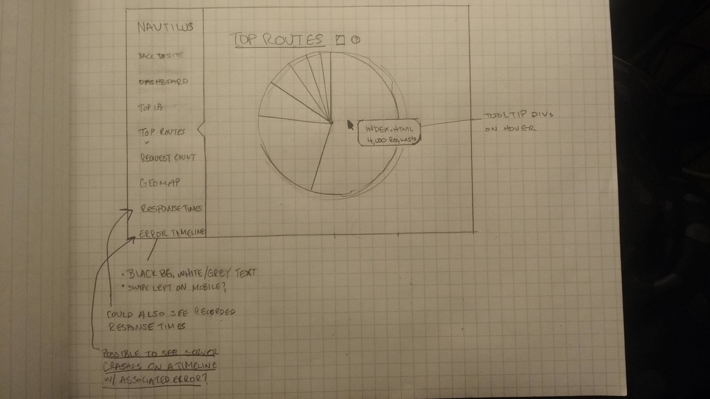

About the developer


Hello! My name is Chris. Before moving to Colorado, I lived in Buffalo, NY. I studied Information Security and Assurance at Alfred State College. After that I was a network engineer for a little over 2 years and achieved the CCNA R/S certification. I am always looking for ways to make myself better, and help others at the same time.
About my project
NAUTILUS: Web server data analysis
This project aims to collect data about a web server, and present it as meaningful information to a software engineer. Seeing the information in a new way can help a developer understand how people use their site. It can help them make better decisions about future changes, see usage patterns, and help troubleshoot issues with the site.
Technologies Used
D3 | Angular.js | Node.js | Knex.js | HTML5 | CSS3 | Bootstrap | JSON | Javascript | jQuery | Git | PostgreSQL | Morgan | NPM | Heroku | IP API
Morgan and NPM - I will modify the Morgan NPM module to append each log to a PostgreSQL database via knex.js and express.js.
The IP API will be used to geolocate visitor IPs.
D3 will be used to render JSON data collected from the web server's logs into visuals such as line graphs, bar graphs, pie charts, and geomaps.
Angular.js will help format the table information, and give the app a single page feel. jQuery, CSS, and Bootstrap will be used for styling and UX/UI.
Version control will be done through Git.
The site will be deployed via Heroku
Wireframes
